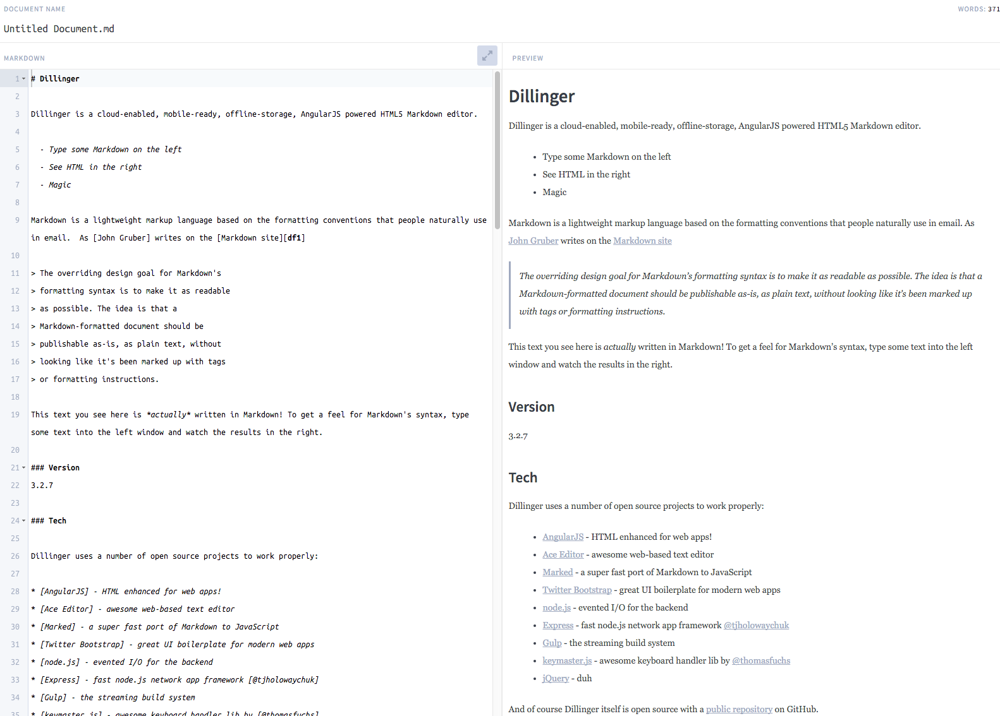

Markdown is a super simple way to add formatting like headers, bold, bulleted lists, and so on to plain text. It was originally designed to be an easy alternative to HTML, and allows people to create web pages with no HTML experience—but it's also a great way to organize notes, to-do lists, and other things. It has all the advantages of plain text, but with the organizational power of a word processor.
Dillinger is a good online markdown resource 